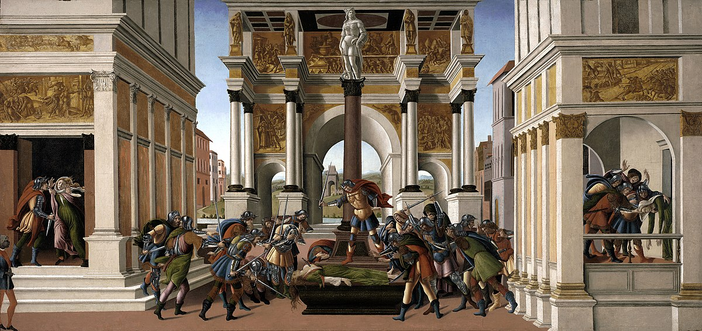

Transformação de Roma em Monarquia
|
Roma passou por uma significativa transformação política, deixando de ser uma organização oligárquica para se tornar uma monarquia, consolidando-se como um império. Este processo marcou uma mudança decisiva na estrutura de governo e na administração do vasto território romano, estabelecendo a figura do imperador como a autoridade suprema.
|

|
Com a instituição da monarquia, a política dos imperadores visava principalmente a estabilização interna do Império Romano, ao invés de focar na expansão contínua de seu território. Durante o final do século II, Roma começou a enfrentar uma série de desafios, incluindo a diminuição dos recursos e o aumento da pressão externa. Estes fatores exigiram uma reorganização da administração e uma consolidação das fronteiras do império.
Foi durante os reinados de Diocleciano e Constantino que Roma passou por reformas administrativas significativas. Diocleciano, em particular, implementou a tetrarquia, um sistema de governo que dividia o poder entre quatro co-imperadores, visando melhorar a eficiência administrativa e a defesa das fronteiras. Constantino, por sua vez, deu continuidade às reformas de Diocleciano e, entre outras medidas, transferiu a capital do Império para Bizâncio, renomeada Constantinopla, fortalecendo assim a parte oriental do império.
As catástrofes do século III, que incluíram invasões bárbaras, crises econômicas e disputas internas pelo poder, abalaram seriamente a estabilidade de Roma. As reformas promovidas por Diocleciano e Constantino ajudaram a mitigar algumas dessas crises, mas não conseguiram reverter completamente o declínio do império. No século V, a parte ocidental do Império Romano caiu definitivamente, marcando o fim de uma era e o início de uma nova configuração política e territorial na Europa.
A transformação de Roma em monarquia foi um processo complexo que refletiu as necessidades de adaptação a novas realidades internas e externas. A centralização do poder na figura do imperador buscou proporcionar uma resposta eficaz aos múltiplos desafios enfrentados pelo império, mas também marcou o início do fim para a parte ocidental, que não conseguiu sustentar sua integridade diante das pressões acumuladas ao longo dos séculos.